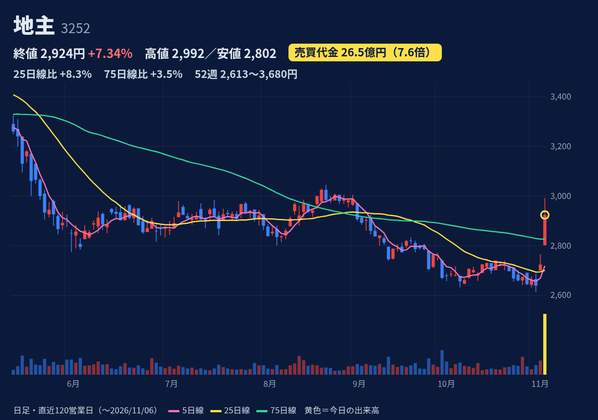
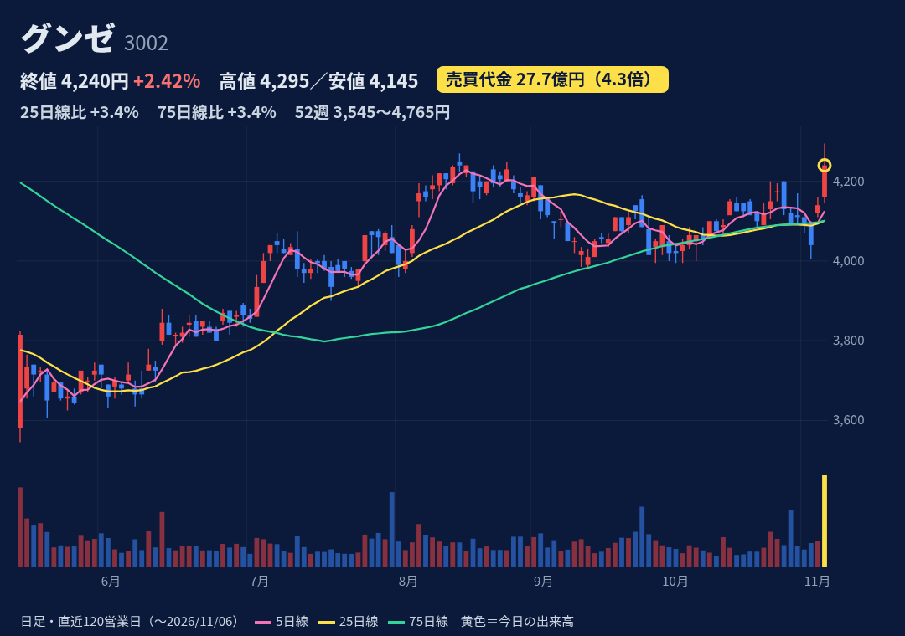
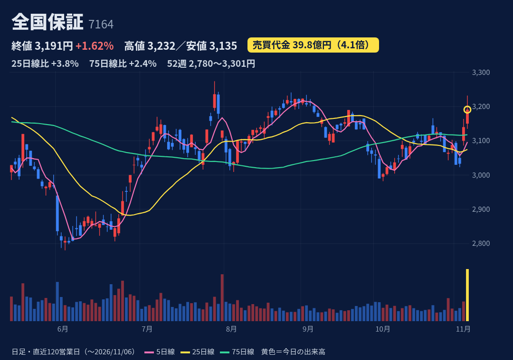
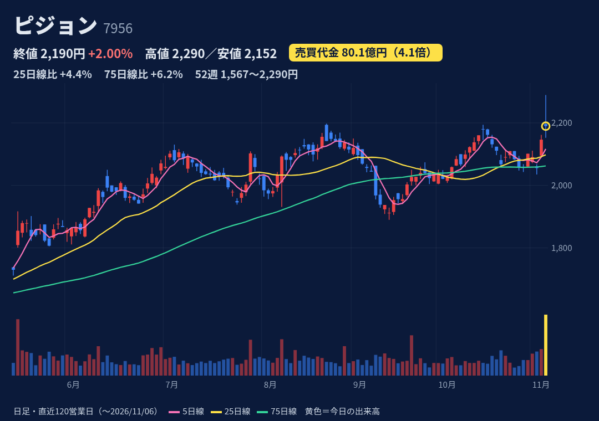

底地（土地のみ）の商業用地を取得・開発し投資家へ売却。私募リート（地主リート）の運用も。
11/5 15:30開示：通期上方修正（売上1000→1060億、営業益120→127億、純益80→85億）＋年間配当130→135円。同時に地主リートへ18物件・約171億円の売却決議（12月・1月引渡し）。今期売却予定の99%確定。
1-9月：売上655億(+50.8%)、営業益76.3億(+77.7%)。7-9月は経常黒字転換。通期営業益127億(+47.6%)に対し進捗60%（4Qに売却集中する型）。次回本決算は未確認（前年は2/12）。
始値2802→高値2992(9:52)→終値2924。陽線、上ヒゲ68円。52週高値3680(2/13)・安値2613(11/4)で位置は下から29%。25日線2701・75日線2826の上、200日線約3050の下。
10/30週：買残29.4万株・売残4.9万株・倍率6.03倍（10/2の13.18倍から低下）。日々公表・増担保の指定なし（JPX 11/6確認）。
売上・利益が物件売却の時期で四半期ごとに大きくぶれる。前回本決算翌日(2/13)は売買代金5.2倍で高値3680から引けは-4.3%の長い上ヒゲ、その後2日で3215まで下落。

肌着大手（紳士肌着トップ）。プラスチックフィルム・電子部品などの機能ソリューション、メディカル（再生医療）も。
11/5 15:30開示：上期決算で営業益57.8億(+81.3%)。同時に自社株買い（上限100万株＝発行済の3.17%・40億円、11/6〜2027/3/24、市場買付）を発表。通期予想は据え置き。
上期（4-9月）：売上641億(-1.8%)、営業益57.8億(+81.3%)。フィルムの価格と原料のタイムラグ・アパレル改革が利益を押し上げ。通期営業益88億(+80.3%)に対し進捗66%。次回3Qは未確認（前年は2/5）。
始値4160→高値4295(9:37)→終値4240。陽線、上ヒゲ55円。52週高値4765(3/2)・安値3545(5/14)で位置57%。25日線4101・75日線4101・200日線4087のすべての上。
10/30週：買残12.5万株・売残1.9万株・倍率6.72倍。日々公表・増担保の指定なし（JPX 11/6確認）。
増益はフィルムの価格・原料のタイムラグによる部分あり（一時的な押し上げの可能性）。前期は純益5.1億と大幅減益、26年1-3月期は営業赤字。売上は前年割れが続く。PER25.6倍。

住宅ローンの信用保証で最大手。全国の金融機関と提携。
11/5 15:30開示：自社株買い（上限400万株＝自己株除く発行済の2.99%・80億円、11/6〜2027/3/31、市場買付）。同時の上期決算は増収・経常増益で、通期予想・配当予想(年123円)は据え置き。
上期：営業収益237.6億(+3.0%)、営業益149.6億(+0.2%)、経常180億(+6.7%)。通期営業益420億に対し進捗36%、経常の進捗38.1%は5年平均38.6%並み。次回3Qは未確認（前年は2/5）。
始値3150→高値3232(9:49)→終値3191。陽線、上ヒゲ41円、安値は13:47。52週高値3301(4/22)・安値2780(6/3)で位置79%。25日線3075・75日線3118・200日線約3100の上。
10/30週：買残18.1万株・売残6.6万株・倍率2.75倍（4週連続で買残減）。日々公表・増担保の指定なし（JPX 11/6確認）。
業績は低成長（営業益+0.2%）で、材料は主に自社株買い。前回本決算翌営業日(5/11)は売買代金4.8倍で-4.9%。金利・住宅着工の影響は推測で未確認。

育児用品最大手（哺乳器・乳首など）。日本・中国・米州欧州で展開。
11/5 15:30開示：3Q決算＋通期上方修正（売上1135→1184億、営業益139→148億、純益91.4→98億）。7-9月営業益48.7億(+45.7%)はフィスコ記事で市場予想を約10億上回り。追加値上げ前の先行需要が日本・中国で発生。
1-9月：売上892億(+10.7%)、営業益127.5億(+27.1%)。通期営業益148億(+12.5%)に対し進捗86%。逆算の10-12月期営業益約20.5億は前年同期31.3億を下回る計画（先行需要の反動）。次回本決算は未確認（前年は2/13）。
始値2196.5→高値2289.5(9:50＝52週高値)→終値2189.5。小さな陰線で上ヒゲ93円、終値はVWAP2222.7円の下。52週安値1567(3/23)で位置86%。25日線2098・75日線2062の上。
10/30週：買残24.6万株・売残7.2万株・倍率3.41倍。日々公表・増担保の指定なし（JPX 11/6確認）。
4Qは先行需要の反動と中東情勢によるコスト増で減益計画。前年の3Q決算翌日(2025/11/7)は売買代金9.6倍で-10.9%。PER26.7倍・PBR3.15倍と割安感は小さい。
株価・出来高・信用残：取引所データ。材料：各社開示・各社報道。